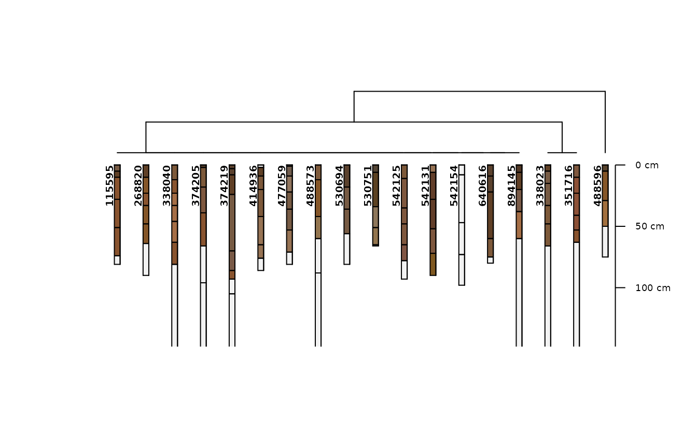
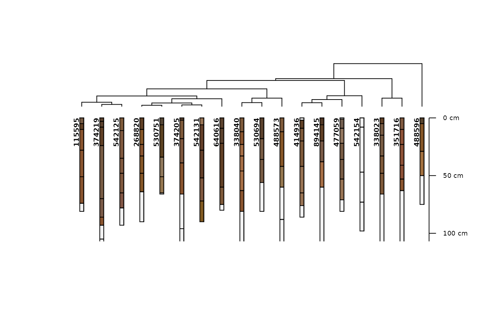
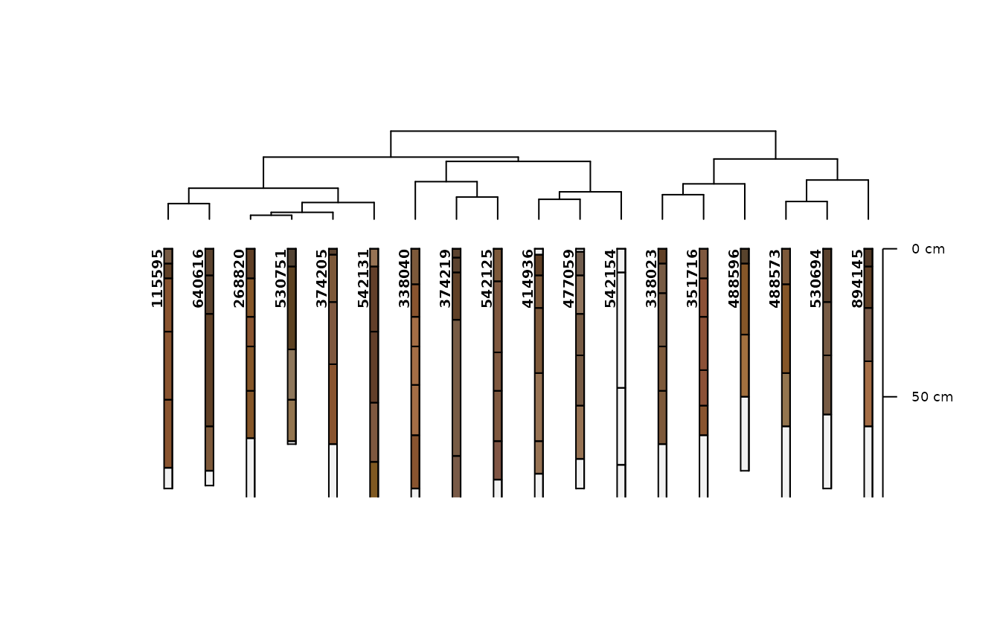
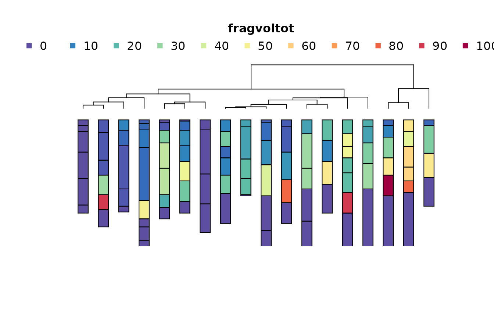
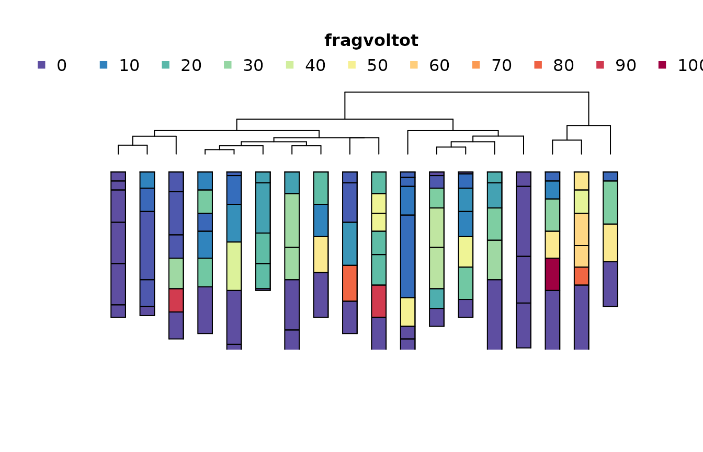

Similar Soils with Loafercreek
Source:vignettes/similar-soils-loafercreek.Rmd
similar-soils-loafercreek.RmdIn this vignette we will use “real” NASIS data via the
loafercreek data set.
The loafercreek dataset includes soils that are
generally similar to Loafercreek series concept, and occur spatially
within a mapunit where Loafercreek or related soil is a major component.
These mapunits are currently used in the Calaveras, Tuolumne, Mariposa
and Butte county areas of California.
loafercreek is a SoilProfileCollection object.
This is a special data structure defined by the {aqp} (Algorithms for
Quantitative Pedology) package intended for managing soil horizon data,
representing various depths within a soil “profile”, along with
“site-level” data that corresponds to the point location or profile in
aggregate.
A variety of {aqp} functions are used to calculate site-level characteristics that are used in hierarchical clustering methods from {stats} and {cluster} as well as similar soils calculations available via the {SOILmilaR} package. Methods for visualizing clusters are provided by the {aqp} package.
First we load the required packages and datasets.
library(SOILmilaR)
library(aqp)
#> This is aqp 2.2-1
library(soilDB)
data("loafercreek", package="soilDB")
set.seed(0)
spc <- loafercreek[sample(1:length(loafercreek), 20)]
## alternately, use NASIS data
# spc <- fetchNASIS()To use your own NASIS data you can replace the spc
object (a random subset of loafercreek) with a call to
soilDB::fetchNASIS(). The loafercreek object is a sample
dataset stored in the {soilDB} package; therefore it does not require a
NASIS installation or account to use.
Next, we define some rating functions that can be used for generating variables that can be used in comparing soils and assessing overall similarity.
rate_taxpartsize <- function(x) {
dplyr::case_match(x,
c("sandy-skeletal") ~ 1,
c("sandy") ~ 3,
c("loamy", "coarse-loamy", "coarse-silty") ~ 5,
c("fine-loamy", "fine-silty") ~ 7,
c("clayey", "fine") ~ 9,
c("very-fine") ~ 11,
c("loamy-skeletal", "clayey-skeletal") ~ 13)
}
rate_depthclass <- function(x,
breaks = c(
`very shallow` = 25,
`shallow` = 50,
`moderately deep` = 100,
`deep` = 150,
`very deep` = 1e4
),
...) {
res <- cut(x, c(0, breaks))
factor(res, levels = levels(res), labels = names(breaks))
}Here we use several {aqp} functions to estimate the particle size control section boundaries, the depth to a root-restrictive layer, and apply our rating functions to the depth and particle size class as populated in NASIS.
site(spc) <- estimatePSCS(spc, clay.attr = "claytotest")
# calculate soil depth
spc$dp <- minDepthOf(spc, pattern = "R|Cr|Cd|kk|m")[[aqp::horizonDepths(spc)[1]]]
s <- similar_soils(spc, list(dp = rate_depthclass,
taxpartsize = rate_taxpartsize))
#> comparing to dominant reference condition (`3.7` on 17 rows)
# transfer some ordinal ratings
spc$rd = s$dp # depth class
spc$rt = s$taxpartsize # particle size classWe also calculate the weighted average clay content (pc)
and percent volume rock fragments (pf) in the particle size
control section we calculated above with
aqp::estimatePSCS()
# calculate some continuous quantities for PSCS, join to site data
site(spc) <- site(mutate_profile(trunc(spc, spc$pscs_top, spc$pscs_bottom),
pc = weighted.mean(clay, hzdepb - hzdept, na.rm=T),
pf = weighted.mean(total_frags_pct, hzdepb - hzdept, na.rm=T)
))[c("peiid", "pc", "pf")]We will now build several models with increasing complexity of the input data.
# set up data frames for various clustering models
x0 <- subset(site(spc), select = c("taxpartsize", "rd"))
x1 <- subset(site(spc), select = c("rt", "rd"))
x2 <- subset(site(spc), select = c("pc", "pf", "rd"))
x3 <- subset(site(spc), select = c("pc", "pf", "dp"))
x4 <- subset(site(spc), select = c("rt", "rd", "pc", "pf", "dp"))The simplest model we construct uses the particle size family and the depth class.
m0 <- cluster::agnes(x0[complete.cases(x0),], method = "gaverage")
plot(as.dendrogram(m0))If we transform the particle size family, we have the option to combine similar classes, and also increase the taxonomic distance between other classes.
In this case, we code “fine-loamy” as a 4 and “loamy-skeletal” as a 7. The groups created by branching in the tree are identical to the simplest model, but the taxonomic distance between the two main groups of pedons is now greater (3 versus 1).
m1 <- cluster::agnes(x1[complete.cases(x1), ], method = "gaverage")
plot(as.dendrogram(m1))In the next most complex model we replace the taxonomic particle size class rating with the PSCS weighted average percent clay and the percent fragments.
We find the same “outgroup” of three pedons we separated earlier, the magnitude of taxonomic distances (y axis) further increases, and we get a lot more subtle variation within that reflects more continuous variation in PSCS clay and fragments.
m2 <- cluster::agnes(x2[complete.cases(x2),], method = "gaverage")
plot(as.dendrogram(m2))Since most of the soils in the loafercreek dat set are
moderately deep we do not get much information from the depth class
grouping. So, instead, in the next model we replace the depth class with
the actual depth to root-limiting layer. We find again that the
loamy-skeletal soils are separated, and some distances of groups within
the fine-loamy soils shift, but ultimately there is little effect as the
variation is still constrained within moderately deep depth class.
m3 <- cluster::agnes(x3[complete.cases(x3),], method = "gaverage")
plot(as.dendrogram(m3))If we add the taxpartsize and depth class ratings back
in with the continuous data we see that we get the exact same clustering
as with the prior model (which included no categorical predictors). This
indicates the categories are adequately covered by the numeric
quantities we replaced them with.
m4 <- cluster::agnes(x4[complete.cases(x4),], method = "gaverage")
plot(as.dendrogram(m4))| peiid | taxpartsize | rt | dp | rd | pc | pf |
|---|---|---|---|---|---|---|
| 115595 | fine-loamy | 7 | 74 | 3 | 27.14000 | 4.60000 |
| 268820 | fine-loamy | 7 | 64 | 3 | 29.46000 | 15.76000 |
| 338023 | loamy-skeletal | 13 | 66 | 3 | 23.95652 | 65.26829 |
| 338040 | fine-loamy | 7 | 81 | 3 | 27.12500 | 26.25000 |
| 351716 | loamy-skeletal | 13 | 63 | 3 | 28.80000 | 54.42000 |
| 374205 | fine-loamy | 7 | 66 | 3 | 30.72000 | 17.36000 |
| 374219 | fine-loamy | 7 | 93 | 3 | 23.76000 | 6.64000 |
| 414936 | fine-loamy | 7 | 76 | 3 | 18.58000 | 27.98000 |
| 477059 | fine-loamy | 7 | 71 | 3 | 15.42000 | 20.38000 |
| 488573 | fine-loamy | 7 | 60 | 3 | 34.00000 | 30.00000 |
| 488596 | loamy-skeletal | 13 | 50 | 2 | 26.00000 | 50.00000 |
| 530694 | fine-loamy | 7 | 56 | 3 | 29.36842 | 31.05263 |
| 530751 | fine-loamy | 7 | 65 | 3 | 28.82000 | 17.20000 |
| 533172 | fine-loamy | 7 | 64 | 3 | NaN | 0.00000 |
| 533889 | fine-loamy | 7 | 61 | 3 | NaN | 15.00000 |
| 542125 | fine-loamy | 7 | 78 | 3 | 24.86000 | 9.28000 |
| 542131 | fine-loamy | 7 | 72 | 3 | 31.04000 | 13.56000 |
| 542154 | fine-loamy | 7 | 73 | 3 | 17.54167 | 0.00000 |
| 640616 | fine-loamy | 7 | 75 | 3 | 31.84000 | 2.00000 |
| 894145 | fine-loamy | 7 | 60 | 3 | 20.96000 | 24.00000 |
Here is a more complex example that adds maximum clay and fragments to the continuous variables included in the clustering.
It also provides code to compare divisive
cluster::diana() and agglomerative
(cluster::agnes()) hierarchical clustering methods as a
method of visualizing “differences” based on a distance matrix.
To further enhance visualization of SoilProfileCollection
objects, plotting of the associated distance matrices with
sharpshootR::plotProfileDendrogram() is demonstrated.
# calculate some continuous quantities for PSCS
site(spc) <- site(mutate_profile(trunc(spc, spc$pscs_top, spc$pscs_bottom),
mc = suppressWarnings(max(clay, na.rm=T)),
mf = suppressWarnings(max(total_frags_pct, na.rm=T)))
)[c("peiid", "pc", "pf", "mc", "mf")]
spc <- spc[which(complete.cases(subset(site(spc), select=c("rt", "rd", "pc", "pf", "dp", "mc", "mf")))),]
# set up data frames for various clustering models
x0 <- subset(site(spc), select = c("taxpartsize", "rd"))
x1 <- subset(site(spc), select = c("rt", "rd"))
x2 <- subset(site(spc), select = c("pc", "pf", "rd"))
x3 <- subset(site(spc), select = c("pc", "pf", "dp"))
x4 <- subset(site(spc), select = c("rt", "rd", "pc", "pf", "dp"))
x5 <- subset(site(spc), select = c("rt", "rd", "pc", "pf", "dp", "mc", "mf"))
.clusterfun_hclust <- \(y, spc) {
rownames(y) <- profile_id(spc)
y[] <- lapply(y, \(z) if (is.character(z) || (!is.numeric(z))) factor(z) else z)
stats::hclust(cluster::daisy(y[complete.cases(y),], metric = "gower"),
method = "centroid")
}
.clusterfun_agnes <- \(y, spc) {
rownames(y) <- profile_id(spc)
y[] <- lapply(y, \(z) if (is.character(z) || (!is.numeric(z))) factor(z) else z)
cluster::agnes(cluster::daisy(y[complete.cases(y),], metric = "gower"),
method = "gaverage")
}
.clusterfun_diana <- \(y, spc) {
# NB: code ordinal factors beforehand if needed
rownames(y) <- profile_id(spc)
y[] <- lapply(y, \(z) if (is.character(z) || (!is.numeric(z))) factor(z) else z)
cluster::diana(cluster::daisy(y, metric = "gower"))
}
# try the following code with the above thre clustering functions
.CLUSTERFUN <- .clusterfun_diana #.clusterfun_hclust #.clusterfun_agnes
# the simplest model uses the particle size family and the depth class
m0 <- .CLUSTERFUN(x0, spc)
#> Warning in cluster::daisy(y, metric = "gower"): binary variable(s) 2 treated as
#> interval scaled
aqp::plotProfileDendrogram(spc, m0, name = NULL)
#
m1 <- .CLUSTERFUN(x1, spc)
#> Warning in cluster::daisy(y, metric = "gower"): binary variable(s) 1, 2 treated
#> as interval scaled
aqp::plotProfileDendrogram(spc, m1, name = NULL)
m2 <- .CLUSTERFUN(x2, spc)
#> Warning in cluster::daisy(y, metric = "gower"): binary variable(s) 3 treated as
#> interval scaled
aqp::plotProfileDendrogram(spc, m2, name = NULL)
m3 <- .CLUSTERFUN(x3, spc)
aqp::plotProfileDendrogram(spc, m3, name = NULL)
aqp::plotProfileDendrogram() can also take most
arguments you would supply to aqp::plotSPC().
m4 <- .CLUSTERFUN(x4, spc)
#> Warning in cluster::daisy(y, metric = "gower"): binary variable(s) 1, 2 treated
#> as interval scaled
aqp::plotProfileDendrogram(
spc,
m4,
print.id = FALSE,
name = NULL,
depth.axis = FALSE,
width = 0.25,
color = "fragvoltot"
)
m5 <- .CLUSTERFUN(x5, spc)
#> Warning in cluster::daisy(y, metric = "gower"): binary variable(s) 1, 2 treated
#> as interval scaled
aqp::plotProfileDendrogram(
spc,
m5,
print.id = FALSE,
name = NULL,
depth.axis = NULL,
width = 0.25,
color = "fragvoltot"
)
| peiid | taxpartsize | rt | dp | rd | pc | pf | mc | mf |
|---|---|---|---|---|---|---|---|---|
| 115595 | fine-loamy | 7 | 74 | 3 | 27.14000 | 4.60000 | 35 | 5 |
| 268820 | fine-loamy | 7 | 64 | 3 | 29.46000 | 15.76000 | 38 | 24 |
| 338023 | loamy-skeletal | 13 | 66 | 3 | 23.95652 | 65.26829 | 25 | 95 |
| 338040 | fine-loamy | 7 | 81 | 3 | 27.12500 | 26.25000 | 30 | 45 |
| 351716 | loamy-skeletal | 13 | 63 | 3 | 28.80000 | 54.42000 | 35 | 75 |
| 374205 | fine-loamy | 7 | 66 | 3 | 30.72000 | 17.36000 | 39 | 40 |
| 374219 | fine-loamy | 7 | 93 | 3 | 23.76000 | 6.64000 | 26 | 8 |
| 414936 | fine-loamy | 7 | 76 | 3 | 18.58000 | 27.98000 | 20 | 35 |
| 477059 | fine-loamy | 7 | 71 | 3 | 15.42000 | 20.38000 | 19 | 45 |
| 488573 | fine-loamy | 7 | 60 | 3 | 34.00000 | 30.00000 | 34 | 30 |
| 488596 | loamy-skeletal | 13 | 50 | 2 | 26.00000 | 50.00000 | 26 | 50 |
| 530694 | fine-loamy | 7 | 56 | 3 | 29.36842 | 31.05263 | 36 | 50 |
| 530751 | fine-loamy | 7 | 65 | 3 | 28.82000 | 17.20000 | 31 | 20 |
| 542125 | fine-loamy | 7 | 78 | 3 | 24.86000 | 9.28000 | 30 | 30 |
| 542131 | fine-loamy | 7 | 72 | 3 | 31.04000 | 13.56000 | 37 | 75 |
| 542154 | fine-loamy | 7 | 73 | 3 | 17.54167 | 0.00000 | 18 | 0 |
| 640616 | fine-loamy | 7 | 75 | 3 | 31.84000 | 2.00000 | 44 | 2 |
| 894145 | fine-loamy | 7 | 60 | 3 | 20.96000 | 24.00000 | 24 | 30 |